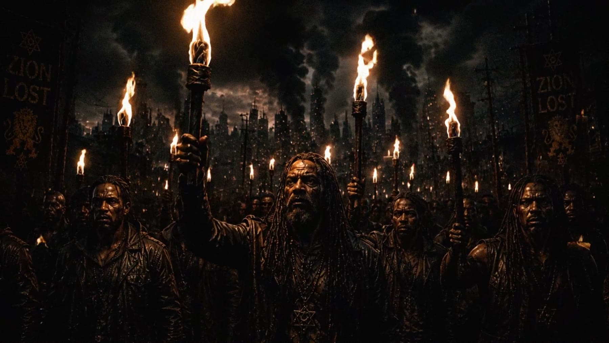
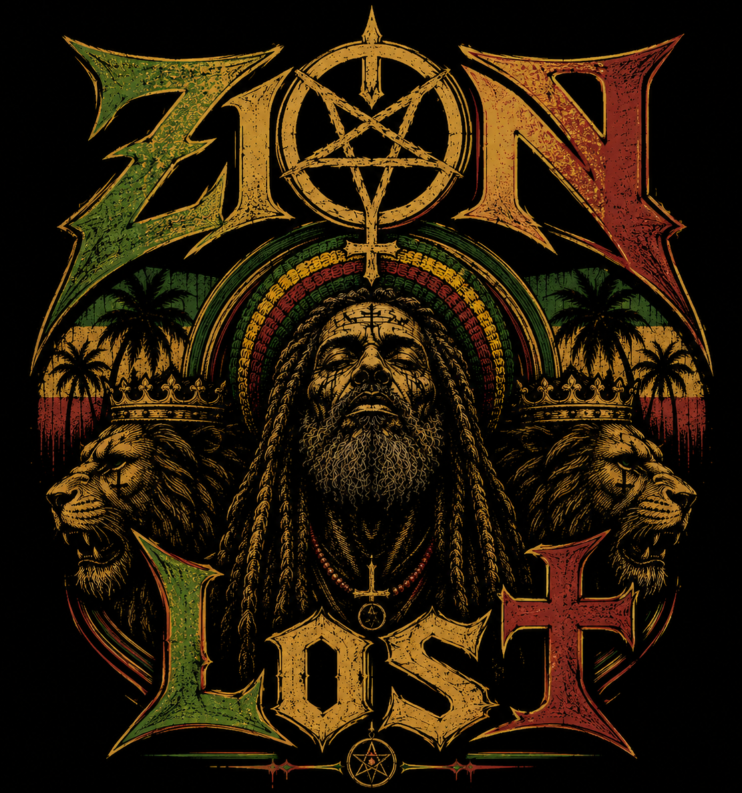

Paul Booth presents
Zion
Zion
Lost
A single project archive for the band, its songs, moving-image work, and visual world.
PROJECT NODEBB / 001ONLINE
The Project
Music, image, and atmosphere assembled as one body of work.
Babylon Black is presented as a unified project rather than separating the band, songs, music video, and photography into unrelated entries. This page is ready for final credits, history, lyrics, recording notes, release information, and external listening links.
Motion Archive / 01
Music Video
Audio Archive
Songs

Now playing
Zion Lost Video Mix
0:00
0:00
Visual Archive / 08
Photo Gallery
Project Information
Archive record
- Project
- Babylon Black
- Creator
- Paul Booth
- Format
- Band / Music / Film / Photography
- Status
- Project page established
- Content
- Final copy and additional songs pending